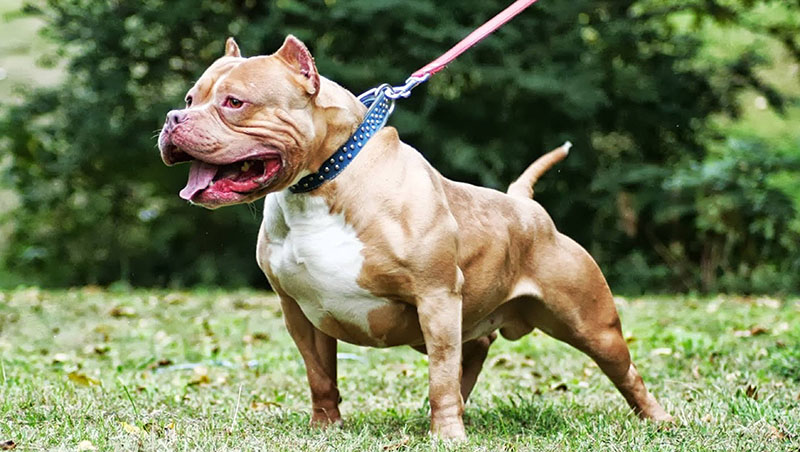

-Chó Pitbull có nguồn gốc từ Anh, ban đầu có kích thước khá nhỏ bé, nhưng để phục vụ một thể thao “chọi chó” nhiều người tại Mỹ đã lai tạo chúng trở nên to lớn và hung dữ hơn.
-Và cái tên Pitbull cũng được bắt nguồn từ môn thể thao này.
-Vào đầu thế kỷ 20 do luật cấm những trò giải trí như “chọi chó” ra đời nên Pitbull được lai tạo cho trở nên hiền lành và dùng để nuôi trong nhà.
Pitbull

-Pitbull có một cái đầu to, cơ bắp săn chắc, trông khá hung dữ nên nhiều người rất sợ giống chó này.
-Nhưng thực tế chó Pitbull còn hiền hơn cả chó Dorberman và chúng chỉ trỏ nên hung dữ khi bị khiêu khích.
-Chó Pitbull rất được giới trẻ trên thế giới yêu thích bởi sự mạnh mẽ của chúng.
-Một chú chó Pitbull hiện nay tại Việt Nam có giá từ 10-20 triệu/con.